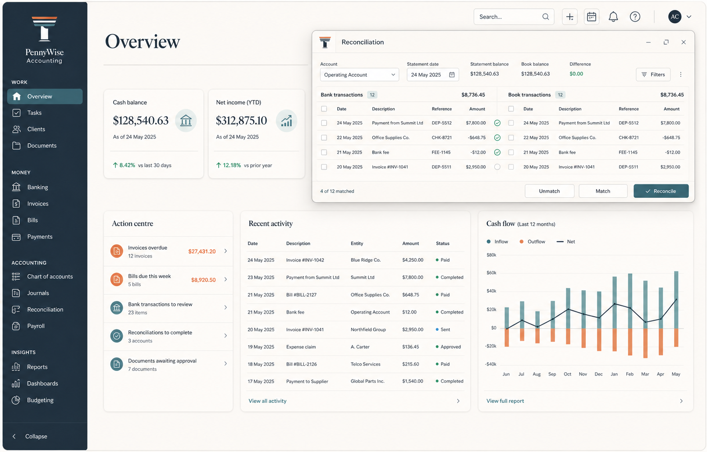
01 Command center
Compact overview, action center, global shell, and priority work window.
Original, high-density workflow references for the entire accounting product surface. These are design blueprints only; implementation must create semantic, accessible components and preserve real application behavior.
Each screen has deliberate menus, contextual actions, tables, inspectors, validation, and
safe states. Use PENNYWISE_VISUAL_ATLAS.md alongside this gallery for the
screen-by-screen implementation rules and the route-level visual-verification gate.

Compact overview, action center, global shell, and priority work window.
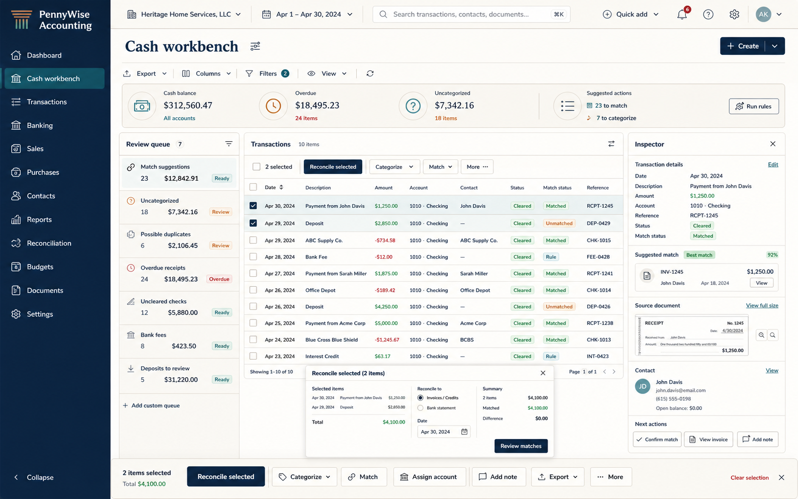
Review queue, transaction table, inspector, and bulk actions.
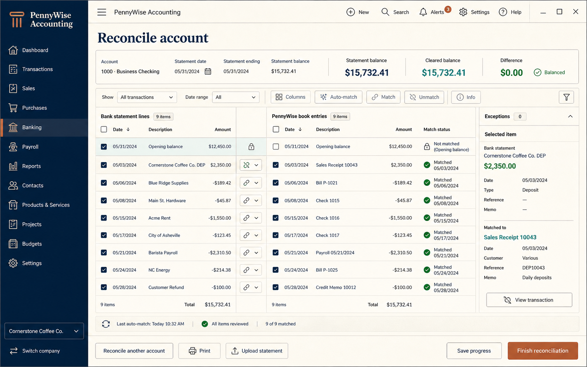
Paired statement/book lines, live difference, exceptions, and finish guardrail.
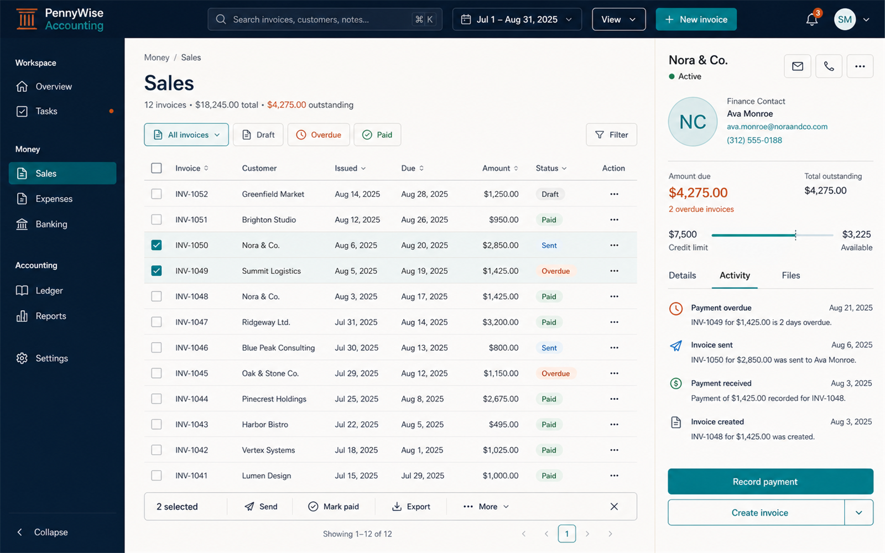
Receivables table, customer inspector, status filters, and row/bulk actions.
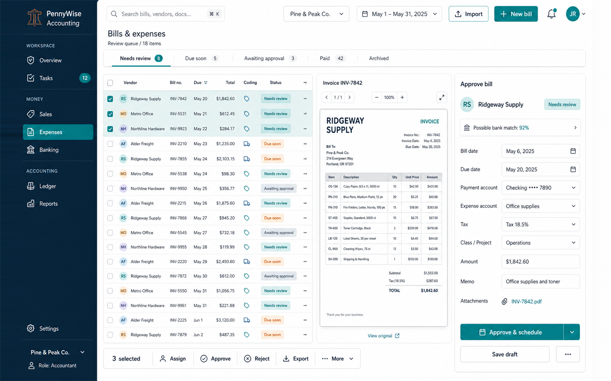
Approval queue, document preview, coding context, and payment controls.
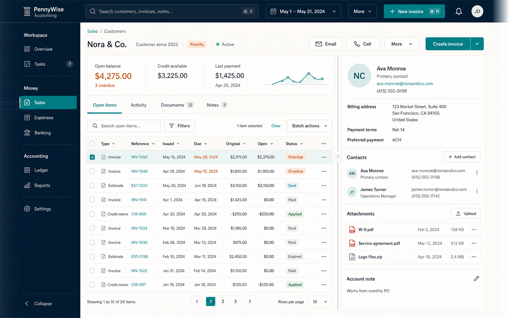
Open items, activity, attachments, people, and related financial actions.
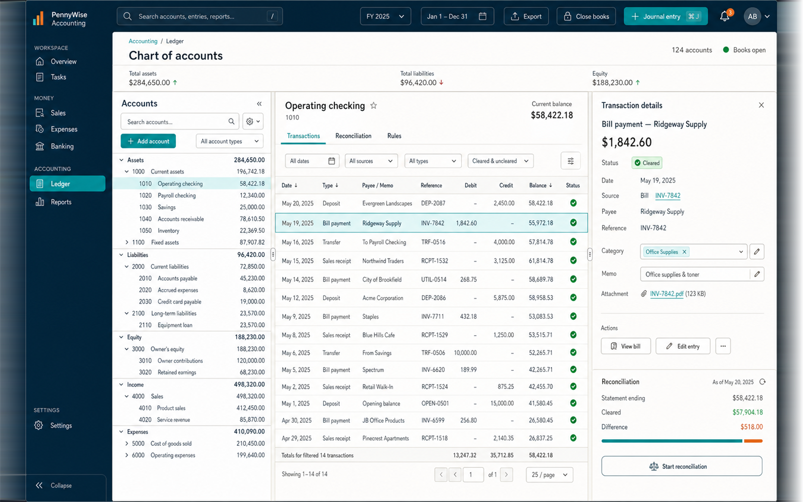
Chart/account register, transaction detail, and audit/reconciliation context.
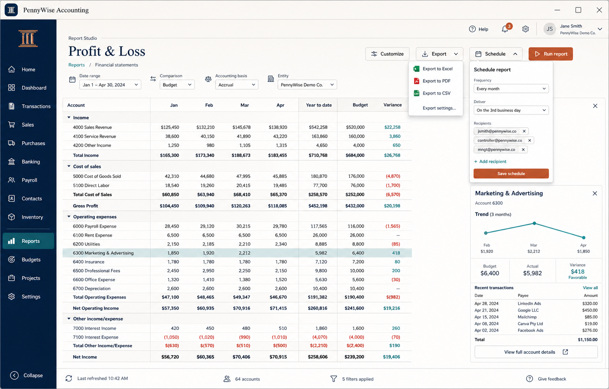
Financial report, filter bar, drill-down inspector, export, and schedule controls.
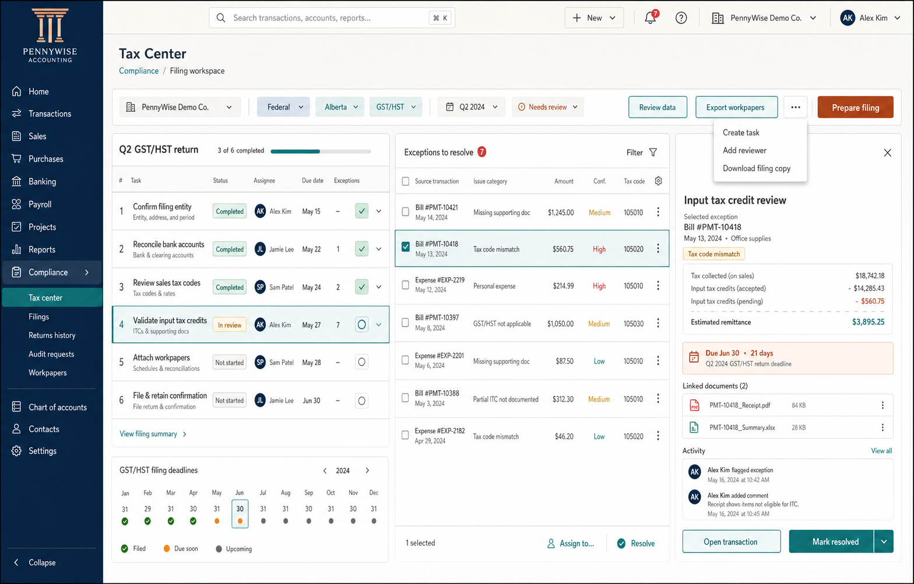
Period checklist, exceptions, deadlines, evidence, and filing actions.
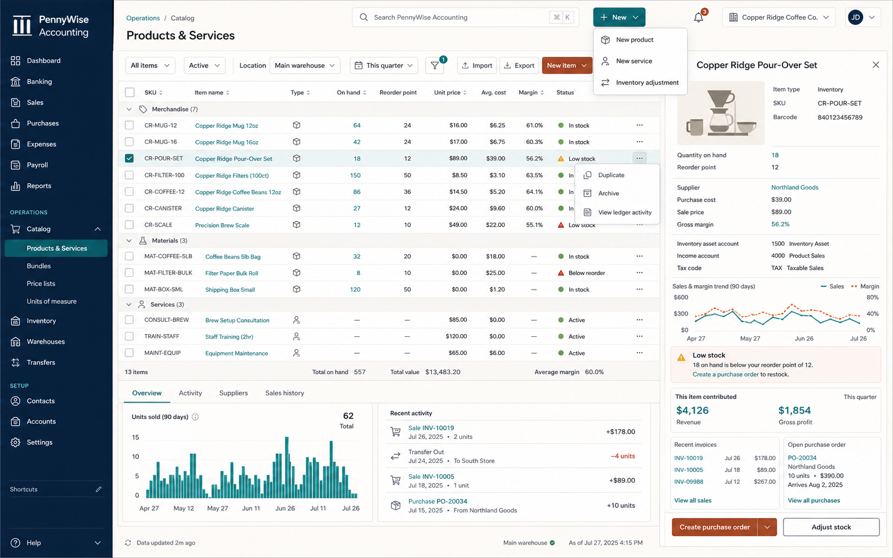
Products, inventory, projects, or job context with financial visibility.
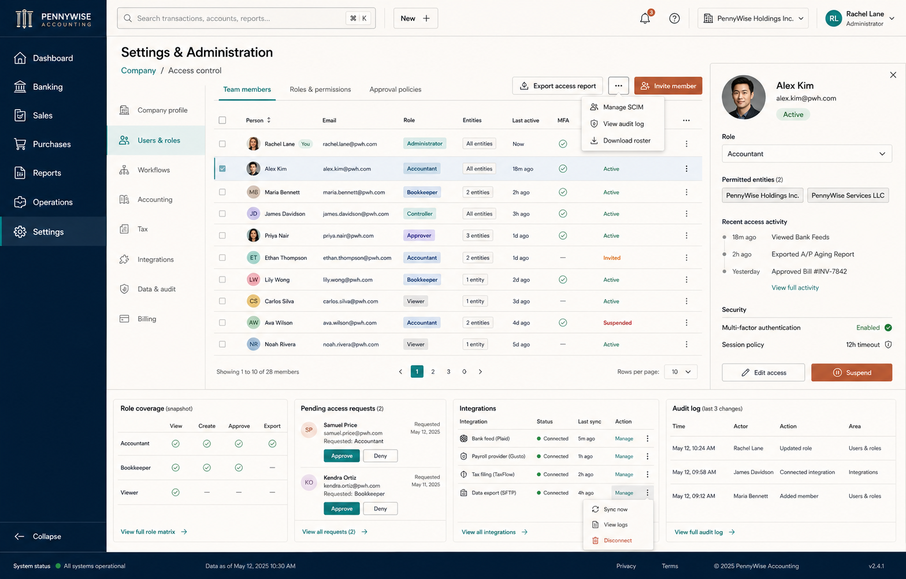
Company, team, roles, integrations, audit, and scoped save state.
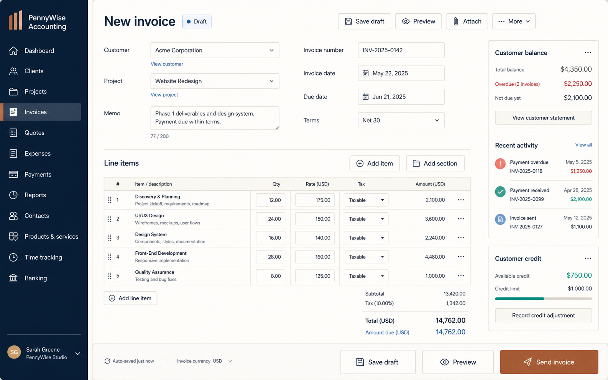
Compact metadata grid, line items, customer context, totals, and send actions.
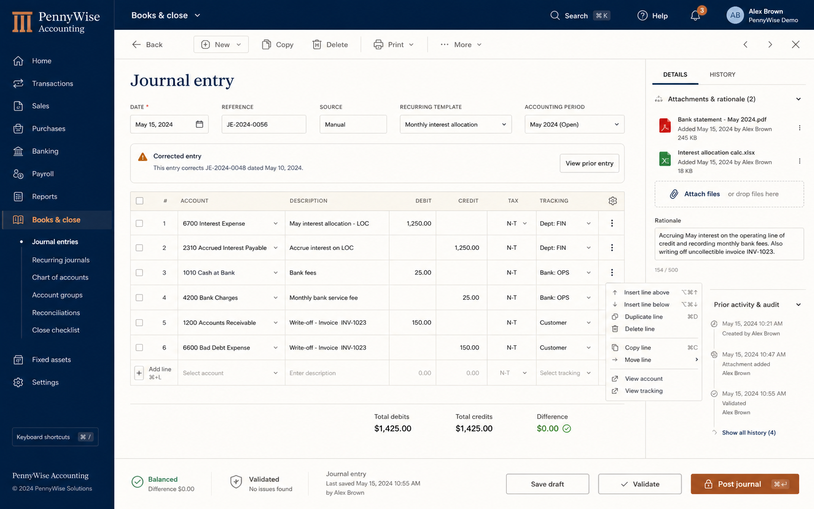
Balanced debit/credit grid, evidence, audit context, and safe posting.
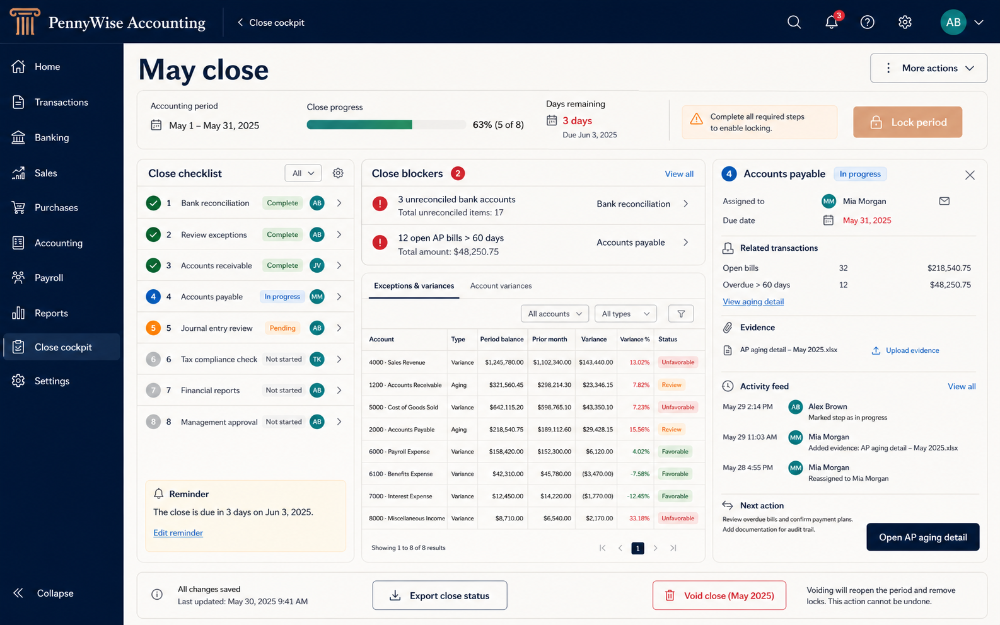
Checklist, blockers, variances, owner detail, evidence, and lock controls.
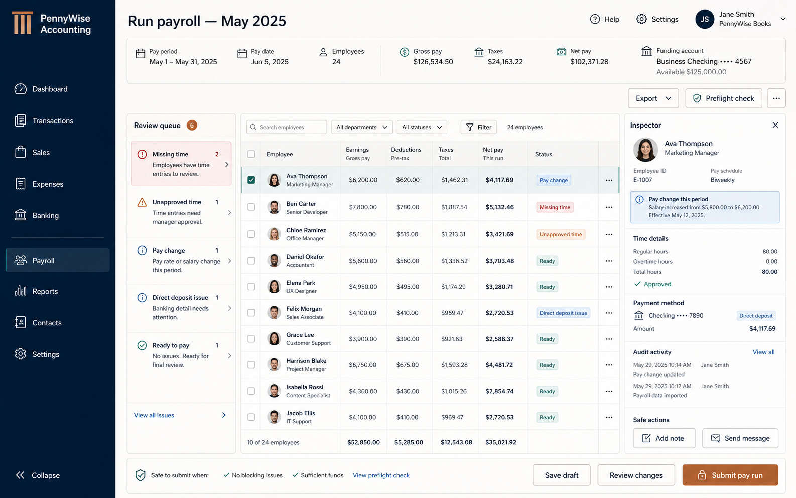
Pay run, exception queue, employee inspector, preflight, and submit guardrail.
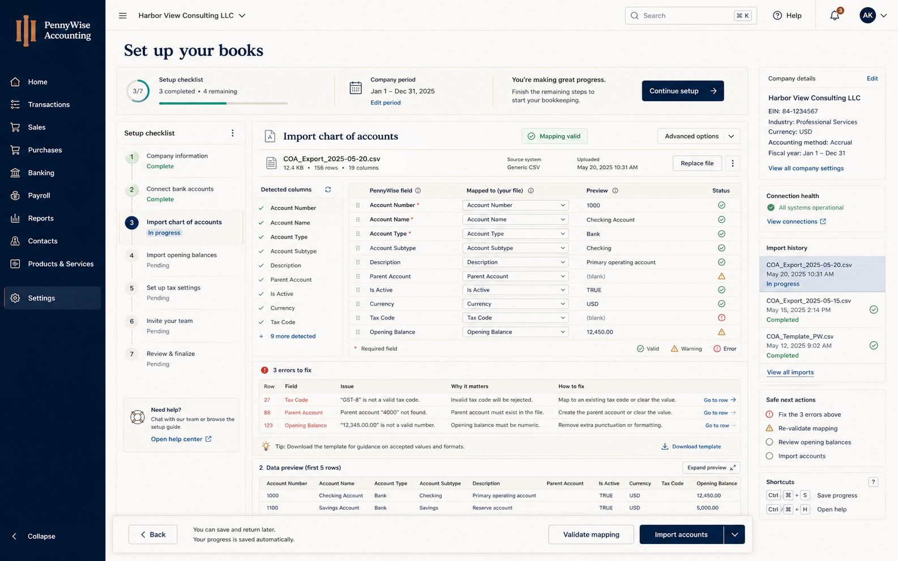
Setup progress, mapping, validation, error recovery, and import action bar.